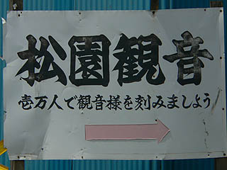
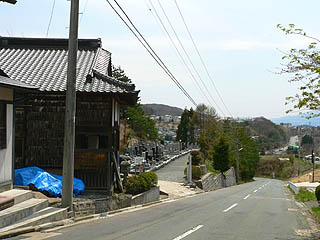
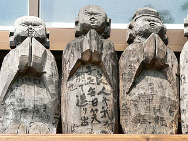
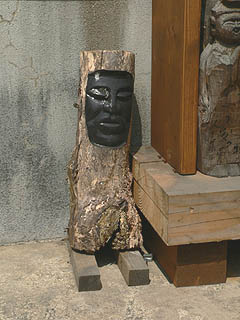
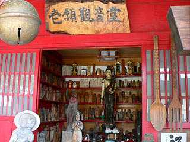
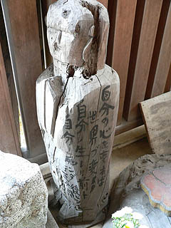

松園観音/岩手県盛岡市
ハナシはとある展覧会から始まる。
岩手県立博物館において「生と死と〜死を見つめ生と向き合う〜」という展覧会を見て来た。
内容は岩手県内の生死に関わる民俗慣行の展示が中心。
特に当サイトで大注目している供養絵額をはじめとした様々な供養グッズの展示などがあり、「もしかして俺のためにやってる展覧会なのでは・・・」など思える程ツボにハマりまくり。
特に遠野の供養人形や傘アゲモノなどは恐らく本邦初の博物館展示であり、企画サイドの胆力が伺える見どころ満載、見応え満点のすっっばらしい展覧会であった。
終わってしまった展覧会の事をいまさら言うのもナンだが、興味と機会があったらカタログだけでも御覧下さいな。
・・・で、大満足しながら博物館を出ると向かいの道にこんな看板が。

むむむ。気になる。気になりすぎる！壱万人で刻む観音様とは？
面白い展覧会を見てハイテンションな私、その正体を突き止めるべく矢印に導かれるまま進む。
すると緩やかな坂道の途中に小さなお堂が。

場所は博物館から車で数分の場所。
ちなみに近くには以前紹介した盛岡大仏もある。
小さな霊園を併設したそのお堂、一見小さな何の変哲もないお堂のようにも見え・えっ・・・ええっ？・・えええええっ〜！！！！
お堂の側面壁にびっっっっっっっっちりと木彫の仏像が並んでいる！窓以外の壁と言う壁が仏像で埋め尽くされているではないか！！
お堂の内壁に並ぶならまだしも外壁に並ぶ仏像って。もしかしたら中に入り切れない仏像が外にあふれたって事？
これが看板にあった壱万人パワーなのだろうか。
見れば看板に「万体仏 昭和43年吉日 小田哲男」と記されている。
ふむふむ、小田さんという方が昭和43年に作りはじめたのだろう。
木彫像は概ね合掌相なのだがかなり荒削りな出来で、お地蔵さんなんだか観音さんなんだかちょっと見わからない。
良く言えば円空仏、悪く言えば円空仏といった感じ。
合掌した手、顔、全体のプロポーション以外は省略した感じ。まあ、壱万体ですから。
実はよ〜く見ると頭の上にモコっと木の塊のようなモノが乗っているのが観音さん・・・のようです。自信ないけど。
逆サイドにも壁面一杯に仏像が並んでいた。
仏像の完成度や彫刻の技術度に関しては敢えて言及しまい。特筆すべきはその数である。
まさに手当りしだい彫りまくった、という感のあるこれらの彫像群を見ていると真剣な求道者の姿が浮かび上がってくる。
いくら高邁な説教を聞くよりも遥かに説得力のあるこれらの彫像群、「俺はやってやったぜ！」というソウル感がビシビシ伝わってくる。

ここの仏像には何故か文字が書き込まれている。人生訓調のメッセージが多い。
「良人や我が子を毎日笑顔で送り出せ」
「老人を笑うな」
等々。昨今ののリベラルな人達の口からはチョット出て来ないソウルフルなコメントにあふれている。
コレはチョット・・・

お堂の正面から中を覗くと、中にもみっちり仏像が並んでいる。

それよりも入口に架かる巨大なフォークとスプーン、そして鰐口ならぬ鈴がナゾでした。
そして入口手前にも足留め必至のユニークな仏像がてんこ盛り。
上2体はここで一番大きい仏像で、高さ3メートル程はあっただろうか。
作りも精緻で作者の気合が見てとれる。
足元の香炉も御覧の通り仏彫魂にあふれている。
扉の前の左右にも比較的大きめの彫像が。
「人の足を引張るな手を引張れ」
「男ヲ大事ニスル家榮ル」
ソウルフルな人生訓が続く。
で、やっと内部。
中央の観音像だけが着彩されており、完成度が高い。
もしかしてコレだけは別の人が作ったのかも。上手すぎますもん。
その他はカタチは違えど粗彫、無着彩、人生訓の3点セットが徹底されている。
「陰陽中道の心で八正道を行ずる」
中の棚にズラリと並ぶ現代の木喰仏。
小田氏が仏像に乗せて伝えたかった生温さ一切なしのかなり男っぽさムンムンの人生訓。
かなり厳し目の方とお見受けいたしました。
・・・あ、でも大半が難しすぎて良く判らないかも・・・
小田氏の人生訓を心に刻みながら本堂を出る。
ふと、お堂の後ろを見るとそこにはさらに大量の仏像が！
これぞレアル壱万体パワー！屋根の下からはみ出そうな勢いの量。
「刻仏壱万体完成同時土中入定即身成仏」
あまりにも激しすぎる氏の生き様が17文字に凝縮されている。
隙間なく並んだ彫像の群れ。それは圧倒的な迫力を持って見る者の心を揺さぶる。

「自分の心を変えれば世界が変わる 自分ノ生レル前ト自分ノ死ンダ後ニツイテ5分間・・・」
あ〜！5分間何をするんだったか一番大事な所を読むの忘れた〜！
博物館の展覧会とはまた違った意味で死を見つめ正と向き合う人の生き様を見た思いだった。
2006.5.
珍寺大道場 HOME